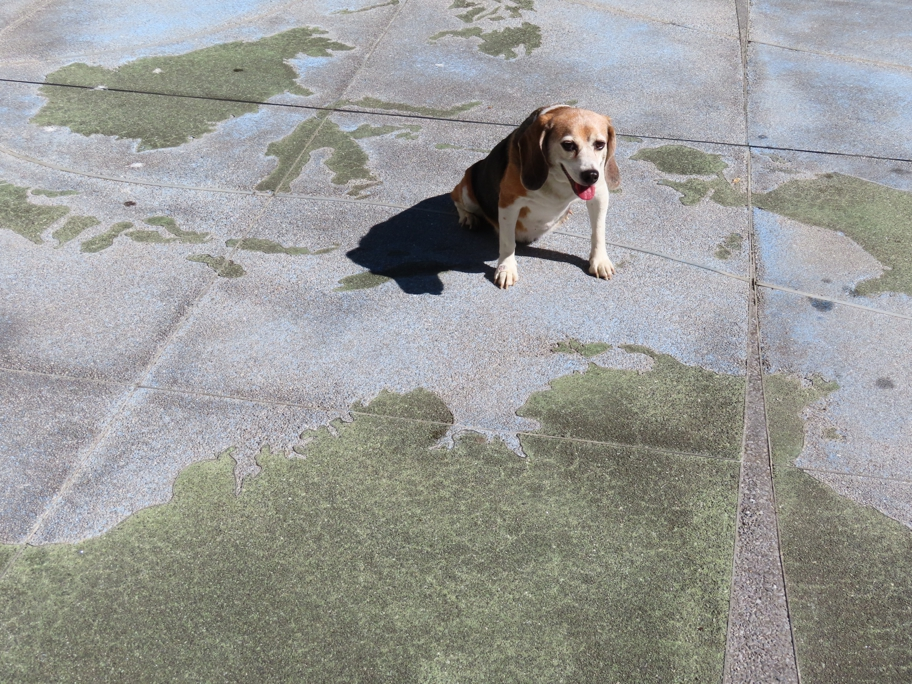

Wallace is sitting on Wallacea, a part of Indonesia where Asian species transition to Australian species, named (like him) for the biologist Alfred Russell Wallace. Its western edge, between Borneo and Sulawesi, is the Wallace Line (not shown). We don't know what the line in the pavement is that Wallace is sitting on. The straight line behind him is the equator. The world map in the pavement is behind USF's Malloy Hall, off Fulton opposite Clayton.
sanfrancisco Wallace Beagle